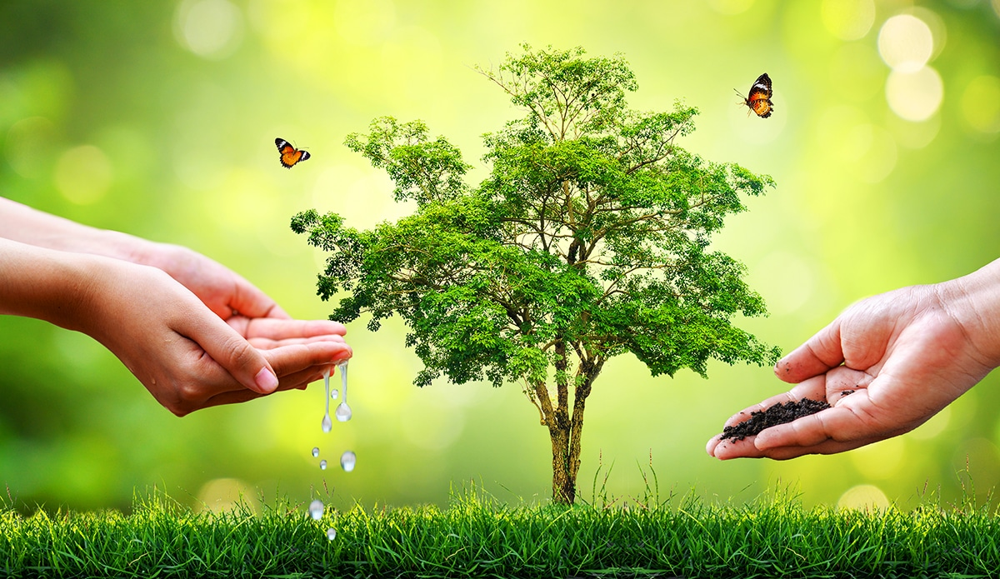
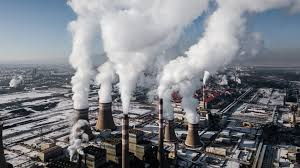
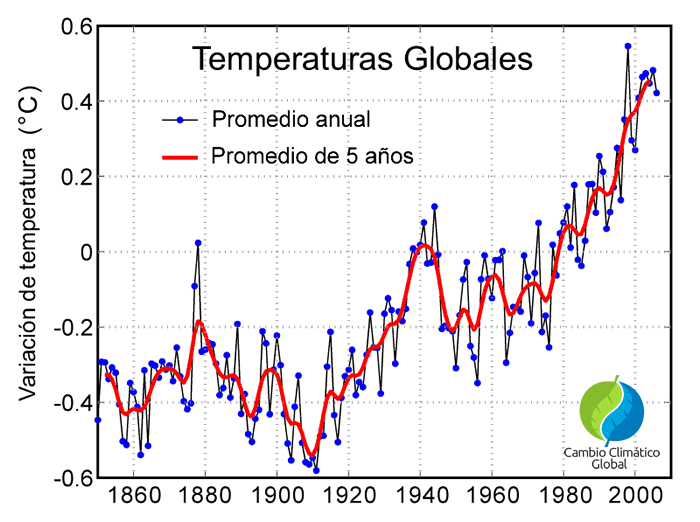
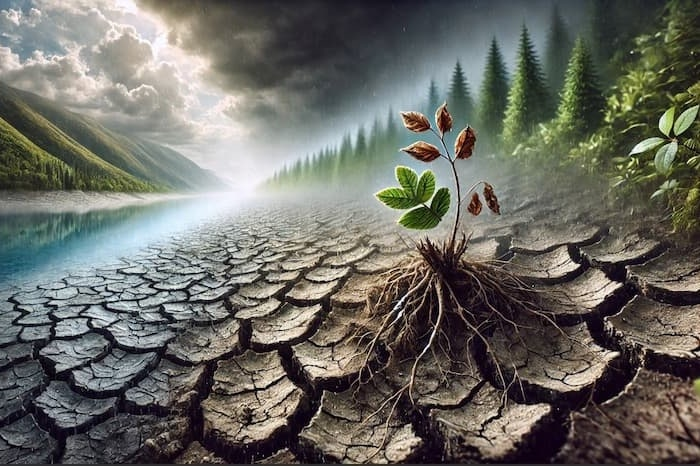

Acción por el clima
En esta página secundaria se presentan datos destacables y recursos adicionales sobre el Objetivo Nº 13: Acción por el clima.

La naturaleza es el reflejo de la urgencia de tomar medidas para proteger nuestro entorno.
Las emisiones globales de dióxido de carbono han alcanzado niveles históricos en la última década.

La temperatura media mundial ha aumentado más de 1°C desde la era preindustrial.

El cambio climático afecta gravemente a los ecosistemas y la biodiversidad.

Este vídeo muestra la importancia de tomar acción frente al cambio climático.